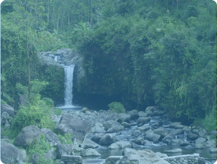
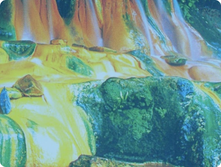
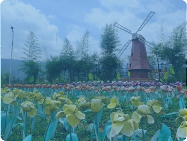
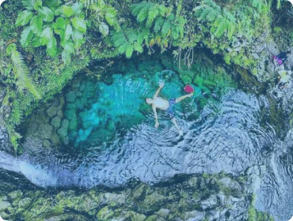
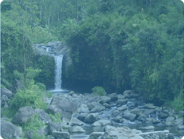
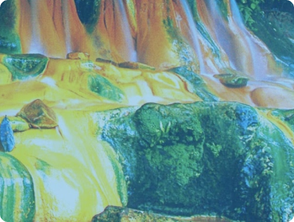
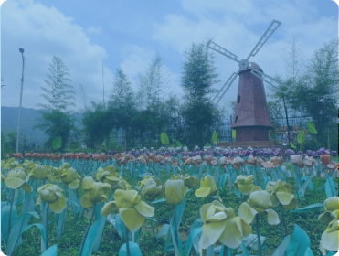
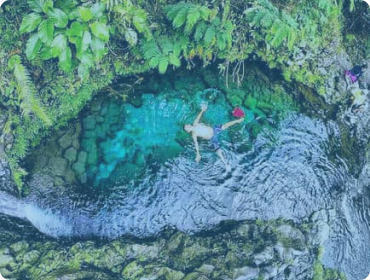

Berwisata Ke Baturraden Tanpa Rasa Takut
Ingin berkunjung ke Batturaden tapi masih bingung tentang apa saja yang ada
sana dan anda stress butuh refreshing? Anda menemukan website yang tepat
Ingin berkunjung ke Batturaden tapi masih bingung tentang apa saja yang ada
sana dan anda stress butuh refreshing? Anda menemukan website yang tepat
baturaden adalah dataran tinggi di kaki gunung slamet
berada di kota purwokerto dengan jarak dari pusat kota kurang lebih 15 km
Di Baturraden banyak destinasi wisata yg bisa kamu jadikan destinasi untuk
liburan kamu.
menikmati pemandanga alam dan air terjun sembari minum
secangkir kopi Hitam dengan
mendoan khas purwokerto di
Raya Baturraden kebayangkan enak nya ...
Di daerah Baturraden juga banyak kok destinasi wisata lain
seperti curug atau air terjun, bukit, dan lain-lain yang bisa
kalian nikmati bersama teman, saudara, dan keluarga.
 







Kami menyediakan informasi tentang tempat wisata yang terdapat di sekitar wilayah Baturraden untuk kita
berwisata bersama pacar, keluarga, dan teman-teman kita. Jika anda merasa stress dan depresi sangat butuh
refreshing untuk menghirup udara segar ataupun bulan madu.